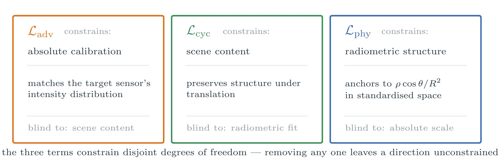

The Framework
A modular, physics-informed pipeline
ReaLiTy orchestrates two physics-informed cycle-consistent GANs — PICGAN for sensor transfer and PICWGAN for weather transfer — within one unified pipeline for LiDAR realism.

Sensor Transfer — PICGAN

Weather Transfer — PICWGAN
The training objective combines three complementary terms, each constraining a degree of freedom the others are blind to: an adversarial term fixes absolute calibration against the target sensor, a cycle-consistency term preserves scene content, and a physics term anchors the output to the radiometric structure implied by the range equation. Removing any one leaves a direction of the solution unconstrained.

The framework enables:
- Realistic LiDAR intensity across different sensors
- Adverse-weather effects on benchmark datasets, creating paired data
- Physics cues: range, incidence angle, and reflectance
- End-to-end preprocessing, training, inference, and evaluation
- Ready-to-use weights for sensor and weather transfer
- Modular, configuration-driven pipelines